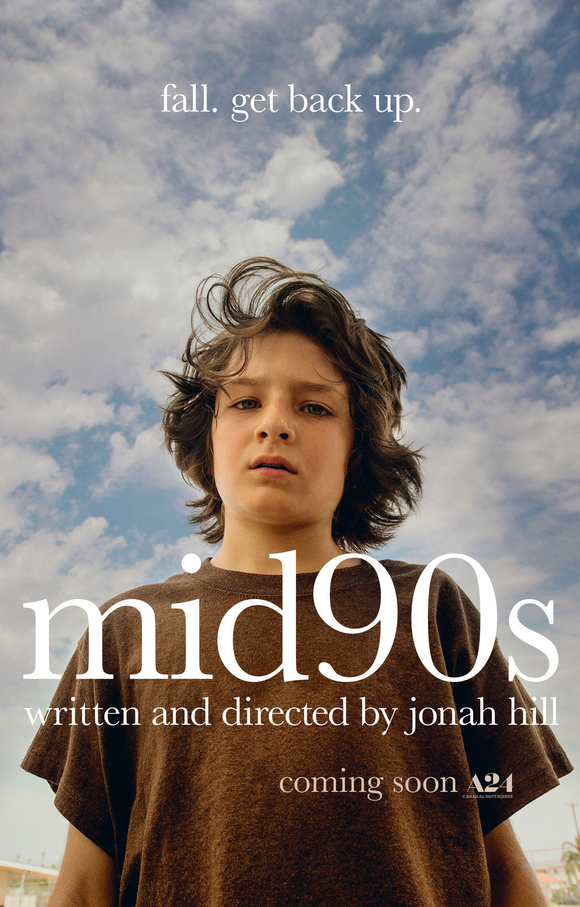

Mid90s

Movie Length:
1 hr 25 min
"A 13-year-old in the 1990s LA grapples with a turbulent home life during summer. Meanwhile, he finds solace in newfound friends at a Motor Avenue skateboard shop." Mid90s is a coming-of-age and drama film both written and directed by Jonah Hill. It follows it's main character, Stevie, as he goes through life with his newfound friendgroup, consisting of Ray, Ruben, F*cksh*t (Yes, that is his actual name in the movie), and Fourth Grade. This movie perfectly encapsulates the feeling of growing up in the 90s, mostly thanks to Jonah Hill basing it on his life and growing up around skate culture.
Plot
The movie follows Stevie, a 13 year old boy growing up in Los Angeles, California during the mid 1990's. His home life is not the greatest, his brother (Ian) very often beats on him and his single mother (Dabney) struggles taking care of two kids.
While out riding his bicycle one day, he happens to pass in front of the skateshop, where he witnesses four older boys intimidating and mocking a shopkeeper; the group consists of the leader Ray, the younger boy Ruben, the loud and energetic Fuckshit, the and quiet Fourth Grade. Drawn to both their skateboarding and rebellious nature, Stevie begins hanging around the boys, and eventually gains a nickname that officially solidifies him as part of the group.
The movie continues with Stevie and this group as they skateboard around town and go to parties. During these parties, Stevie gets an idea of and experiences what it is like to be an adult, much to the dismay of his brother and mother.
While not spoiling much else, the film shows the struggles that Stevie and the rest of the group have to go through as each of them has to deal with the inevitability that they will grow up past their teenage years in a beautifully composed film.
Rating
Everything about the film is phenomenal. With a soundtrack ripped straight from 90s skaters, to the masterful cinematagrophy of Christopher Blauvelt, this film delivers a very nostalgic experience for the viewers to enjoy. The relatability of the film's themes of growing up further, along with its more adult themes, brings viewers in and gives them a viewing experience that they won't forget. If you are into both the mature coming-of-age stories and skateboarding, then this is a film which you should definitely watch.
Extra:
This movie is based on Jonah Hill's own experience with growing up in Los Angeles during the mid 90s
The main characters that we follow (Stevie and the rest of the skate group) are all originally skaters that Jonah Hill found while scouting for actors. He found it easier to teach skaters how to act rather than teach actors how to skate
In one of the scenes, group leader Ray talks to a homeless man played by "Del the Funky Homosapien", who's music is featured in the film
This movie was shot entirely on 16mm film
To help the young actors get a better feel for the 1990s, Jonah Hill gave castmembers iPods with a playlist of his favorite 90s songs, and there were movie nights of films from the era.
Filed under Coming of Age, Drama